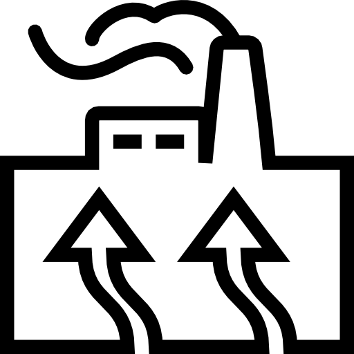

Energia Solar
Consiste no aproveitamento da radiação solar emitida sobre a Terra. Trata-se, portanto, de uma fonte de energia que, além de inesgotável, é altamente potente, pois uma grande quantidade de radiação é emitida sobre o planeta todos os dias. A sua principal questão, todavia, não é a sua disponibilidade na natureza, e sim as formas de aproveitá-la para a geração de eletricidade. Existem duas formas de utilização da energia solar, a fotovoltaica, em que placas fotovoltaicas convertem a radiação solar em energia elétrica, e a térmica, que aquece a água e o ambiente, sendo utilizada em casas ou também em termoelétricas através da conversão da água em vapor, este responsável por movimentar as turbinas que acionam os geradores.
Energia Eólica

Utiliza-se da força promovida pelos ventos para a produção de energia. Sua importância vem crescendo na atualidade, pois, assim como a energia solar, ela não emite poluentes na atmosfera. As usinas eólicas utilizam-se de grandes cataventos instalados em áreas onde a movimentação das massas de ar é intensa e constante na maior parte do ano. Os ventos giram as hélices, que, por sua vez, movem as turbinas, acionando os geradores.Embora essa fonte de energia seja bastante eficiente e elogiada, ela apresenta algumas limitações, como o caráter não totalmente constante dos ventos durante o ano, havendo interrupções, e a dificuldade de armazenamento da energia produzida.
Energia Hidrelétrica

Por sua vez, a energia hidroelétrica utiliza-se do movimento das águas dos rios para a produção de eletricidade. Em países como Brasil, Rússia, China e Estados Unidos, ela é bastante aproveitada pelas usinas que transformam a energia hidráulica e cinética em eletricidade. Como é necessário o estabelecimento de uma área de inundação no ambiente em que se instala uma usina hidrelétrica, a sua construção é recomendada em áreas de planalto, onde o terreno é mais íngreme e acidentado, pois rios de planície necessitam de mais espaço para represamento da água, o que gera mais impactos ambientais. Por um lado, as hidroelétricas trazem vários prejuízos ambientais, não só pela inundação de áreas naturais e desvio de leitos de rios, como também pelo dióxido de carbono emitido pela decomposição da matéria orgânica que se forma nas áreas alagadas. Por outro lado, essa é considerada uma eficiente forma de geração de eletricidade, além de ser menos poluente, por exemplo, que as termoelétricas movidas a combustíveis fósseis.
Energia da Biomassa
Por um lado, as hidroelétricas trazem vários prejuízos ambientais, não só pela inundação de áreas naturais e desvio de leitos de rios, como também pelo dióxido de carbono emitido pela decomposição da matéria orgânica que se forma nas áreas alagadas. Por outro lado, essa é considerada uma eficiente forma de geração de eletricidade, além de ser menos poluente, por exemplo, que as termoelétricas movidas a combustíveis fósseis. Por um lado, as hidroelétricas trazem vários prejuízos ambientais, não só pela inundação de áreas naturais e desvio de leitos de rios, como também pelo dióxido de carbono emitido pela decomposição da matéria orgânica que se forma nas áreas alagadas. Por outro lado, essa é considerada uma eficiente forma de geração de eletricidade, além de ser menos poluente, por exemplo, que as termoelétricas movidas a combustíveis fósseis.
Energia Geotérmica
A energia geotérmica corresponde ao calor interno da Terra. Em casos em que esse calor se manifesta em áreas próximas à superfície, as elevadas temperaturas do subsolo são utilizadas para a produção de eletricidade.Basicamente, as usinas geotérmicas injetam água no subsolo por meio de dutos especificamente elaborados para esse fim. Essa água evapora e é conduzida pelos mesmos tubos até as turbinas, que se movimentam e acionam o gerador de eletricidade. Para o reaproveitamento da água, o vapor é novamente transportado para áreas em que retorna à sua forma líquida, reiniciando o processo. O principal problema da energia geotérmica é o seu impacto ambiental através de eventuais emissões de poluentes, além da poluição química dos solos em alguns casos. Somam-se a isso os elevados custos de implantação e manutenção.